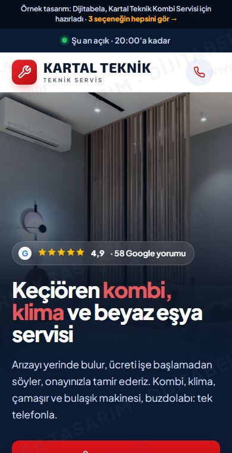
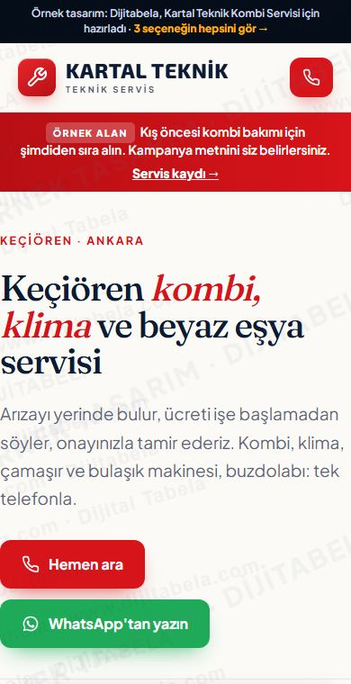
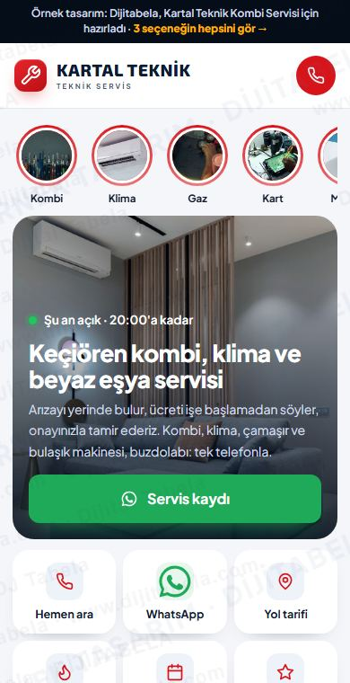

Google'daki bilgilerinizle (4,9 ★, 58 yorum) ve işinize özel çalışan araçlarla hazırladık. Üçü aynı içerik, üç ayrı yerleşim. Telefonda açıp deneyin; beğendiğinizi söyleyin, kendi alan adınızla yayına alalım.
| Eksik | Bu sitede çözümü |
|---|---|
| ✕Google kaydınızda web sitesi yok | ✓Google'daki bilgileriniz ve yorumlarınızla hazır, telefonda hızlı açılan 3 farklı site tasarımı |
| ✕Online arıza ve servis kaydı alınmıyor | ✓Müşterinin bilgisini doldurup tek dokunuşla WhatsApp'ınıza gönderdiği akıllı form ve sihirbaz |
| ✕Yorum sayınız artırılabilir (58 yorum) | ✓Sitede tek dokunuşla 'Google'da yorum yap' bağlantısı ve memnun müşteriye yorum hatırlatması |
| ✕Google aramasında sizi anlatan bir sayfa yok, yalnız harita kaydınız var | ✓Bölgenize özel arama metinleri, sık sorulan sorular ve Google'ın okuduğu işletme bilgisi (schema) |

ÖnerimizGüçlü fotoğraflı giriş, hızlı talep kartı, görselli hizmet kartları, 4 adımlı süreç. En kapsamlı yerleşim.
Aç ve dene
Zarif serif başlıklar, kemerli fotoğraf, dönüşümlü hizmet anlatımı, numaralı bölümler.
Aç ve dene
Telefon uygulaması gibi: hikâye halkaları, sekmeler, alt menü. Tek elle hızlı talep.
Aç ve deneSeçtiğiniz tasarım sizin bilgileriniz ve fotoğraflarınızla tamamlanır, kendi alan adınızla yayına girer. Fiyatımız benzer işlerin piyasa ortalamasının altındadır.
Örnek tasarımdır, yayında değildir. Hizmet listesi ve metinler örnektir, sizinle netleştirilir. Formlar demo olarak WhatsApp'a ön dolu mesaj açar. Fotoğraflar: Pexels (ticari kullanım serbest). Dijitabela · 0501 945 21 84 · dijitabela.com